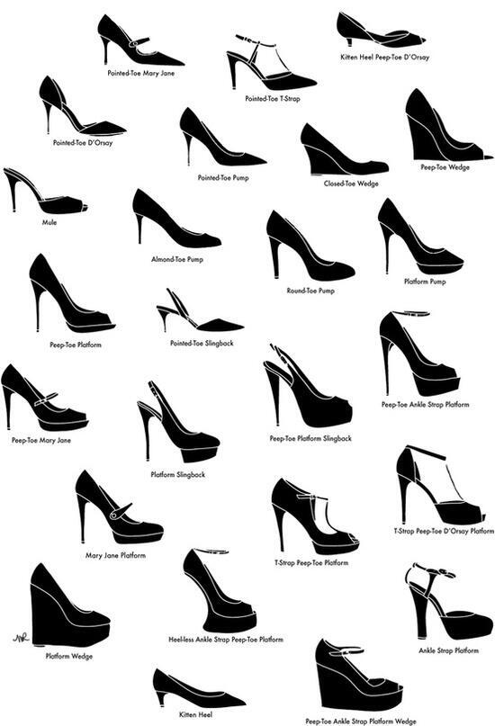

Guida alle scarpe
Modelli
Tipologia tacco
Alcuni esempi
Guida taglie
| Taglia | Lunghezza del piede (in cm) |
| 35 | 22.3 |
| 36 | 23 |
| 37 | 23.7 |
| 38 | 24.3 |
| 39 | 25 |
| 40 | 25.7 |
| 41 | 26.3 |
| 42 | 27 |
| 43 | 27.7 |
| 44 | 28.3 |
| 45 | 29 |
Misurazione numero La taglia produttore é la taglia stampata nella scatola e nell’etichetta della scarpa. Per misurare la lunghezza del piede, indossa le calze che porteresti normalmente con le scarpe che intendi acquistare, e misura il piede dalla punta dell’alluce al tallone. La larghezza del piede è la misura della parte più ampia del piede, dalla base dell’alluce alla base del mignolo. I piedi tendono a gonfiarsi durante il giorno, quindi è consigliabile prendere le misure nel tardo pomeriggio.
Altezza del tacco l'altezza del tacco per mantenere l'angolo di alzata della suola da terra, auementa in base al numero della scarpa. L'altezza del tacco dichiarato sulla scatola corrisponde ai numeri 37/38 ed aumenta di 2,5mm ogni 2 numeri. inoltre ci sono due modi per msurare l'altezza del tacco. Quello americano prevede di prendere la misura dal lato posteriore fino a quando il tacco si congiunge alla suola. Quello italiano invece prevede la mosurazione dell'asse centrale del tacco. Più difficile da misurare col righello, e consiste nel posizionare lo stesso in corrispondenza del centro della base del tacco tenendolo in posizione perfettamente verticale fino al punto in cui il tacco si congiunge con la suola.
La comodità delle scarpe Un luogo comune è che la scomodità delle scarpe dipenda dall'altezza del tacco. Non è del tutto vero, ci sono scarpe altissime molto più comode di scarpe basse. I Fattori che rendono una scarpa comoda sono vari, analizziamoli uno per uno:
Iniziare sui tacchi camminare sui tacchi non è facile, ma con la tecnica giusta, un pò di esperienza ed un pò di sacrificio iniziale, il piede si abitua e non ne potrà più fare a meno. Le tecniche possibili possono essere due, entrambe si applicano solo mentre si è in casa, in modo da utilizzare i tacchi come se fossero delle pantofole. La prima tecnica è quella graduale che è anche quella più diffusa. quindi iniziare con un tacco bassissimo e comodo per poche ore al giorno, per poi incrementare sia per l'altezza del tacco e sia nel tempo in cui viene indossato. La seconda tecnica, è una tecnica d'impatto, adatta a coloro che intenderanno indossare esclusivamente tacchi vertiginosi. e quella di far abituare immediatamente il piede ai tacchi più scomodi. Dopo essersi assicurati di non avere problematiche specifiche alle articolazioni, magari con un consulto medico. Quindi indossiamo una mule senza plateau dal tacco di 14 cm, o ancora meglio uno zocccolo della stessa altezza con suola interna non rivestita, per tutta la gornata in casa, cercando di mantenerlo sempre. All'inizio questa tecnica sarà molto dolorosa ed insopportabile in quanto il peso del corpo si scarica esclusivamente dulle dita dei piedi, ma con questa scarpa si imparerà a mantenere l'equilibrio sulla scarpa più instabile che c'è. Questa tecnica va portata aventi per almeno 2 mesi, mantenendo una assoluta costanza. E rigorosamente solo in casa. Successivamente, sempre e rigorosamente in casa, si potrà iniziare ad indossare una scarpa notevolmente più comoda come una mule con plateau e tacco o con zeppa, sempre rigorosamente alta, consiglio 16 - 17 cm. Il plateau ci consentirà di ammortizzare la pressione sulle dita dei piedi. ma nel frattempo impareremo a camminare su una scarpa ancora più alta acquisendo l'equilibrio per evitare eventuali storte, andando avanti così per altri 2 mesi. Se dopo questi quattro mesi totali ci si sentirà sicuri e slanciati nella camminata, si potrà uscire di casa con una scarpa a tronchetto bassa o con una decollete con zeppa d'estate, quindi con tacco massimo di 8cm e preferibilmente con un plateau. Facendo attenzione a eventuali sconnessioni del pavimento su cui si cammina. Pian piano, di mese in mese si potrà iniziare ad incrementare l'altezza della scarpa anche fuori casa. fino ad essere in grado di padroneggiare un tacco 12 anche nelle situazioni quotidiane. A quel punto il piede si sarà abituato alla scarpa alta di cui non ne potremo più fare a meno.